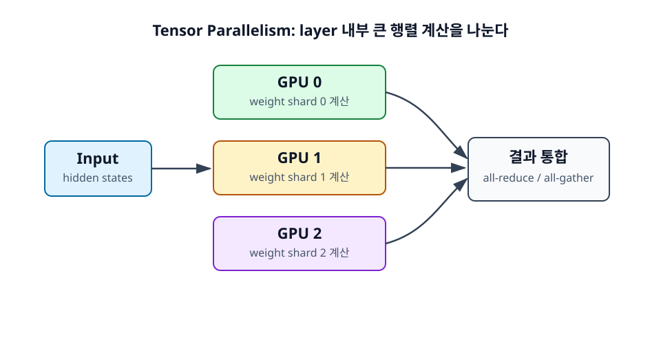

10장. Tensor Parallelism¶
Tensor Parallelism은 모델 layer 내부의 큰 행렬 계산을 여러 GPU에 나누는 방식이다. Data Parallel이 요청을 나눈다면, Tensor Parallel은 하나의 요청을 처리하는 모델 계산 자체를 나눈다.

학습 목표¶
- Tensor Parallel이 layer 내부 계산을 나누는 방식임을 이해한다.
- All-reduce와 all-gather가 필요한 이유를 파악한다.
- TP size를 키울 때의 장단점을 설명한다.
10.1 Tensor Parallel의 정의¶
LLM layer에는 매우 큰 행렬 곱이 반복해서 등장한다. Attention의 Q, K, V projection, output projection, MLP의 up/down projection이 대표적이다. Tensor Parallel은 이런 큰 행렬을 여러 조각으로 나누어 여러 GPU가 동시에 계산하게 한다.
10.1.1 Layer 내부의 큰 행렬 계산을 나눈다¶
행렬 곱을 한 GPU가 모두 수행하지 않고, weight matrix를 열 방향 또는 행 방향으로 나누어 여러 GPU에 배치할 수 있다. 각 GPU는 자신이 가진 weight shard에 대해 부분 결과를 계산한다. 이후 필요한 경우 결과를 모으거나 합친다.
이 방식은 모델 weight가 GPU 한 장에 들어가지 않을 때 유용하다. 각 GPU가 전체 weight가 아니라 일부 shard만 가지기 때문이다.
10.1.2 Attention projection을 나눌 수 있다¶
Self-attention에는 hidden state를 Query, Key, Value로 바꾸는 projection이 있다. Multi-head attention 구조에서는 head 단위로 나누기 쉬운 부분이 있다. 여러 GPU가 서로 다른 attention head 또는 projection shard를 담당할 수 있다.
다만 attention output을 다음 layer로 넘기려면 GPU별 부분 결과를 정리해야 한다. 이때 통신이 발생한다.
10.1.3 MLP projection을 나눌 수 있다¶
Transformer block의 MLP도 큰 행렬 곱을 포함한다. 특히 LLM에서는 MLP hidden dimension이 크기 때문에 연산량과 weight 메모리 비중이 상당하다. MLP projection을 여러 GPU에 나누면 큰 모델을 올리고 계산을 분산하는 데 도움이 된다.
Tensor Parallel 구현은 단순히 weight를 자르는 것 이상이다. 어느 projection을 column-parallel로 나누고, 어느 projection을 row-parallel로 나눌지에 따라 필요한 통신 방식이 달라진다.
10.2 Tensor Parallel의 직관¶
Tensor Parallel의 핵심 직관은 "큰 행렬 곱을 여러 GPU가 나누어 계산하고, 필요한 순간에 결과를 합친다"이다. 이때 합치는 과정이 공짜가 아니므로 통신 비용이 성능을 좌우한다.
10.2.1 큰 행렬을 여러 GPU가 나누어 곱한다¶
예를 들어 하나의 projection weight가 너무 크다면 이를 4개 shard로 나누어 4개의 GPU에 배치할 수 있다. 입력 hidden state는 각 GPU에 전달되고, 각 GPU는 자기 shard와 곱해 partial output을 만든다.
이렇게 하면 각 GPU의 weight 메모리 부담이 줄고, 계산도 병렬로 진행된다. 단일 GPU보다 큰 모델을 올릴 수 있고, 경우에 따라 latency도 줄일 수 있다.
10.2.2 계산 후 결과를 모아야 한다¶
부분 계산만으로 다음 layer에 필요한 완전한 결과가 항상 만들어지는 것은 아니다. 어떤 경우에는 GPU별 결과를 이어 붙여야 하고, 어떤 경우에는 합산해야 한다. 이 과정에서 all-gather나 all-reduce 같은 collective communication이 등장한다.
즉 Tensor Parallel은 계산을 나누는 동시에 통신을 만든다. 이 통신이 충분히 빠르지 않으면 병렬화 이득이 줄어든다.
10.2.3 All-reduce와 all-gather가 등장한다¶
All-reduce는 여러 GPU가 가진 값을 합산하고 그 결과를 모든 GPU가 갖게 하는 통신이다. All-gather는 여러 GPU의 shard를 모아 모든 GPU가 전체 결과를 갖게 하는 통신이다. Tensor Parallel에서는 layer마다 이런 통신이 반복될 수 있다.
입문 단계에서는 세부 알고리즘보다 "TP는 layer 내부 계산을 나누기 때문에 자주 통신한다"는 점을 기억하면 된다.
10.3 Tensor Parallel의 장단점¶
Tensor Parallel은 큰 dense model serving에서 핵심적인 기술이다. 하지만 GPU interconnect가 느리거나 TP size가 과도하면 효율이 떨어질 수 있다.
10.3.1 큰 dense model을 여러 GPU에 올릴 수 있다¶
가장 큰 장점은 큰 모델을 여러 GPU에 나누어 올릴 수 있다는 것이다. 단일 GPU에 들어가지 않는 모델도 TP를 사용하면 실행 가능해진다. 또한 layer 내부 계산이 분산되므로 단일 요청 latency 개선 가능성도 있다.
vLLM이나 TensorRT-LLM 같은 serving 엔진에서 tensor_parallel_size는 이런 목적으로 자주 사용된다.
10.3.2 빠른 GPU interconnect가 필요하다¶
TP는 통신이 잦다. 같은 노드 안에서 NVLink로 연결된 GPU와, PCIe만 사용하는 GPU, 노드 간 네트워크로 연결된 GPU는 통신 성능이 크게 다르다. TP는 가능한 빠른 interconnect 안에서 묶는 것이 유리하다.
느린 네트워크 위에서 TP를 크게 잡으면 GPU들이 계산보다 통신을 기다리는 시간이 길어질 수 있다.
10.3.3 TP size를 무작정 키우면 효율이 떨어질 수 있다¶
TP size가 커질수록 각 GPU가 맡는 계산량은 줄어들지만, 통신 참여 GPU 수와 통신 overhead는 늘 수 있다. 작은 모델에 TP size를 크게 주면 오히려 비효율적일 수 있다.
실무에서는 모델 크기, GPU memory, interconnect, batch size를 기준으로 TP size를 결정한다. "GPU가 8장이 있으니 TP=8"이 항상 답은 아니다.
정리¶
Tensor Parallel은 layer 내부의 큰 행렬 계산과 weight를 여러 GPU에 나누는 병렬화다. 큰 dense model을 올리는 데 유용하지만, all-reduce와 all-gather 같은 통신이 필요하다. 따라서 빠른 GPU interconnect와 적절한 TP size 선택이 중요하다.
점검 질문¶
- Tensor Parallel은 Data Parallel과 무엇을 다르게 나누는가?
- TP가 GPU 간 통신 성능에 민감한 이유는 무엇인가?
다음 장으로¶
다음 장에서는 layer 자체를 여러 GPU에 나누어 배치하는 Pipeline Parallelism을 살펴본다.